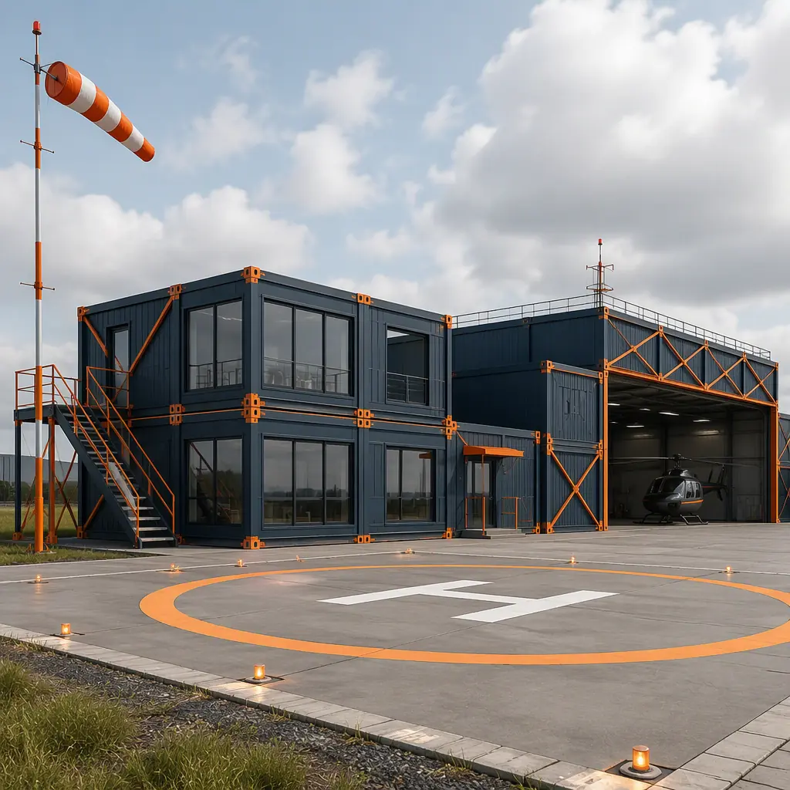
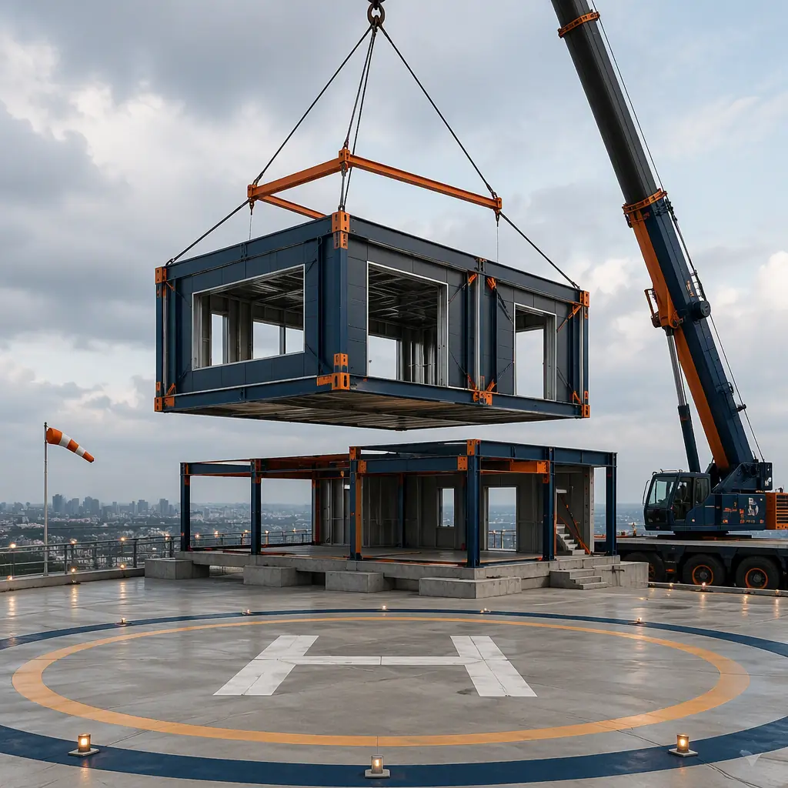
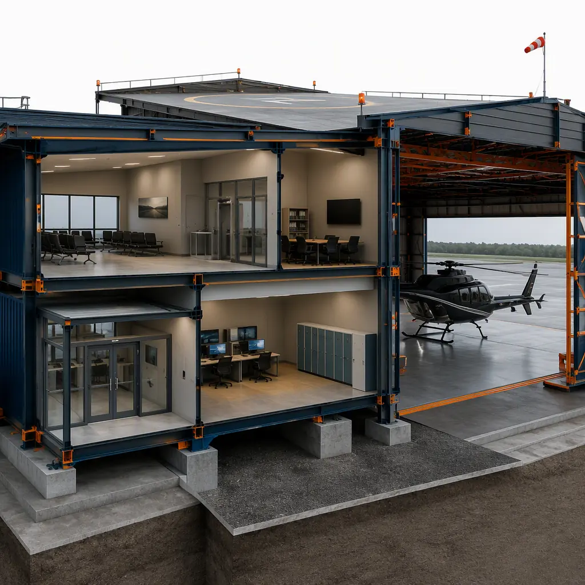
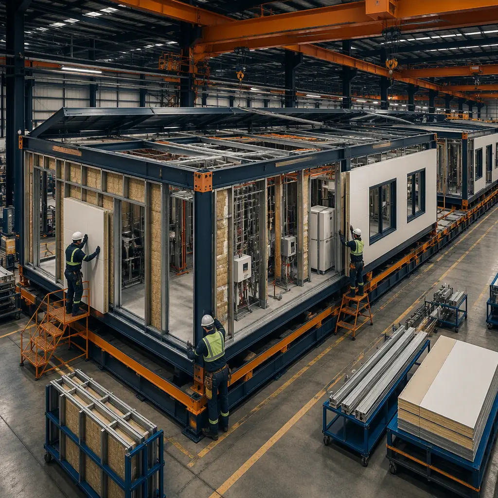

Helicopter infrastructure is quietly one of the most schedule-sensitive building programs in transportation. Emergency medical services (EMS) operate 1,500+ helipads in the US, offshore energy supports helicopter logistics to platforms in the Gulf of Mexico and the North Sea, and the emerging advanced air mobility (AAM) industry is planning vertiport networks that will need hundreds of new facilities by the early 2030s. Yet the buildings that make a heliport functional — passenger terminals, hangars, fueling and firefighting facilities, security and operations buildings — are conventionally stick-built over 12–18 months, often at remote or constrained sites where labor is scarce and weather windows are short. Modular prefabricated construction manufactures these buildings as factory-built steel-frame modules in parallel with helipad civil works and FAA approval processes, compressing the total program to 6–10 months with a 20–30% building cost reduction. The same concurrent-production model that accelerates modular airport and aviation construction applies at heliport scale.

Why Heliport Support Infrastructure Is a Bottleneck
Heliports pair aviation-grade regulatory requirements with remote, weather-exposed sites — a combination that makes conventional delivery slow and expensive:
- The approval clock runs in parallel with construction. FAA heliport approval under Part 157, state aviation permits, and local zoning review typically take 6–12 months. Conventionally, building construction waits for approvals or starts late; with modular delivery, the terminal, hangar, and operations modules are manufactured during the approval window and arrive ready to set when the helipad is approved. This parallel schedule logic mirrors what we document for modular transit facilities and bus depots.
- Remote and constrained sites punish field labor. Hospital rooftop helipads, offshore logistics bases, and mountain EMS facilities have no room for months of stick-built construction — and every day of site work in a constrained footprint compounds cost. Factory-built modules arrive on flatbeds and are set by crane in days, a logistics model detailed in our modular transportation and logistics guide.
- Security and operational buildings are specialized. Heliports need secure passenger processing, crew briefing rooms, weather observation, fueling administration, and firefighting support — each with specialized MEP and security systems. Factory-built modules arrive with access control, communications, and environmental systems pre-installed and tested, compressing the field fit-out phase that conventionally adds 3–5 months.
- Aviation compliance is inspection-intensive. Obstruction marking, lighting control, fueling separation, and fire protection must satisfy FAA Advisory Circular 150/5390-2 and local aviation authorities. Factory fabrication with documented quality control — the same discipline behind modular factory QC systems — compresses the field inspection and punch-list phase.


What Gets Factory-Built — The Heliport Module Package
The modular heliport divides into functional modules that can be manufactured, tested, and shipped independently:
Passenger Terminal and Operations Modules
Terminal modules house passenger processing, waiting areas, crew briefing rooms, weather observation stations, and operations offices. They arrive with security access control, communications, and HVAC pre-installed — including the segregated passenger and crew circulation paths that aviation security programs require. A conventional heliport terminal build takes 5–8 months on site; factory production compresses that to 2–3 months, with the module arriving finished and ready for connection. Passenger-processing building programs follow the same pattern we document for airport terminal construction.
Hangar and Maintenance Modules
Aircraft hangars for helicopters and vertical takeoff aircraft are delivered as large clear-span steel modules with wide openings, mezzanine workshop space, and specialized MEP — fire suppression, floor drains for washing, and high-bay lighting. Modular hangar bays of 60–100 ft clear span cover single-aircraft and multi-aircraft configurations, with sliding door packages factory-installed. The clear-span structural approach serves the same industrial building types as modular warehouse and distribution facilities.
Fueling, Firefighting, and Support Buildings
Fueling administration buildings, firefighting equipment shelters, and general support buildings complete the package. These modules arrive with explosion-rated construction where required, fuel system monitoring infrastructure, and firefighting equipment bays pre-installed — compressing the specialized field work that conventionally extends heliport schedules by 2–4 months. Hazard-rated enclosure design parallels heavy industrial modular construction in process environments.
Security and Operations Integration
Heliport security programs — access control at the pad perimeter, camera coverage of the TLOF and approach paths, and segregated passenger and crew circulation — are coordinated at module design stage rather than retrofitted after construction. Factory-built modules arrive with the camera mounting, conduit, and access-control hardware pre-installed, and the security plan documented for the operator's aviation security program. This integration-first approach is the same one our modular government and municipal building work applies to secure facilities.

Rooftop, Hospital, and Offshore Delivery Models
Heliport buildings are rarely built on greenfield sites. Three delivery models dominate, and modular construction fits each one:
- Hospital rooftop helipads. Level I and II trauma centers rely on helicopter EMS, and rooftop helipad support — elevator lobbies, medical equipment staging, patient transfer areas, and fire suppression for the pad — must be added to operating hospitals without disrupting clinical services. Modular support rooms are craned into place in a single weekend setting window, with MEP tie-ins scheduled around hospital operations — a delivery model that stick-built construction cannot match on an active rooftop. Hospital facility programs are covered in our modular hospital construction guide and modular healthcare facilities analysis.
- Offshore and remote logistics bases. Offshore energy logistics bases, island terminals, and mountain rescue bases share one constraint: labor and materials are expensive to transport, and field construction is weather-limited. Factory-built modules travel as standard flatbed cargo — the same logistics chain documented in modular transportation and logistics — and arrive complete, minimizing the skilled-trades exposure that drives remote construction costs to 1.5–2.5× urban rates. The remote-camp experience from modular mining and remote industrial camps applies directly.
- Vertiport-on-structure. Early AAM networks will place vertiports on parking garages, transit hubs, and existing helipads — structures never designed for terminal buildings. Modular packages keep added dead load predictable (factory-known module weights), allow phased installation as vehicle certifications land, and can be relocated when network demand shifts. The structural-load discipline parallels modular parking structure design.
Vertiports & Advanced Air Mobility — The New Infrastructure Category
The AAM industry is converging on vertiport design standards — FAA Engineering Brief 105 for vertiport design, EASA vertiport prototype technical specifications in Europe, and ICAO work toward a global standard. Early vertiports will be built on existing helipads, parking garages, and rooftop structures, and they need the same building package as heliports at smaller scale: passenger processing, battery or hydrogen refueling support, operations and security spaces. Because vertiport standards are still evolving, the built infrastructure must be relocatable and reconfigurable — exactly the property of factory-built modules. Operators can deploy a standard module package, relocate it as networks densify, and reconfigure terminals as vehicle types and charging systems change. The reconfigurability advantage is the same one we document for modular data center and edge computing facilities, where infrastructure must track a fast-moving technology curve.
Vertiport-specific modules — battery charging bays with thermal management, passenger hold rooms sized for 4–8 pax per eVTOL rotation, and flight operations rooms with the communications infrastructure for beyond-visual-line-of-sight operations — are extensions of the same steel-frame module family, which means vertiport operators can procure from the same factory pipeline as heliport owners and standardize spare parts, logistics, and commissioning procedures across a mixed network.
Regulatory Compliance — FAA, ICAO Annex 14 & Local Rules
Heliport facilities operate under FAA Part 157 notification and approval, FAA Advisory Circular 150/5390-2 for heliport design (including TLOF and FATO dimensional standards, obstacle-free approach and departure surfaces under Part 77, and obstruction lighting), ICAO Annex 14 Volume II for international operations, and local aviation authority and zoning requirements. Modular delivery supports compliance by enabling factory-documented fabrication — obstruction lighting and marking systems coordinated at module design stage, fueling and fire protection installed to rated standards, and security systems pre-wired and tested before shipment — while the compressed schedule reduces the period during which a partially built facility exposes the operator to approval risk. Permitting strategy for aviation and infrastructure projects is covered in our guide to permitting and zoning.
Cost Structure — Modular vs. Conventional Heliport Build
| Cost Category | Conventional (8,000 sq ft Package) | Modular (8,000 sq ft Package) |
|---|---|---|
| Terminal & operations building | $1.4–2.2M | $1.1–1.7M (factory-built) |
| Hangar & maintenance module | $1.6–2.5M | $1.3–2.0M (clear-span steel) |
| Fueling, firefighting & support | $0.8–1.3M | $0.6–1.0M (pre-installed systems) |
| Security, AV, comms & MEP | $0.7–1.1M | $0.55–0.9M (factory-integrated) |
| Field labor, logistics & weather risk | $0.6–1.0M | $0.25–0.45M |
| Total Build Cost | $5.1–8.1M | $3.8–6.05M |
The 20–30% building cost reduction compounds with 4–8 months of earlier operation — material for an EMS helipad where every month of earlier service improves patient transport coverage, and for offshore logistics bases where helicopter turnaround capacity directly gates platform operations. For a full treatment of modular project economics, see our 2026 modular cost guide and our developer's ROI analysis.
Heliport Network Rollout — Phasing and Standardization
EMS operators, offshore logistics providers, and AAM networks rarely build a single heliport — they roll out networks of five, twenty, or fifty facilities. Network rollout is where modular delivery compounds its advantage: the first facility establishes the module designs, documentation package, and commissioning procedures, and every subsequent facility reuses them, cutting design time per site by 50–70% and eliminating the re-engineering that conventional projects repeat at every location. Operators can also phase capacity — deploying a minimal terminal now and adding hangar or passenger modules as traffic grows — matching capital deployment to actual utilization instead of front-loading a full build. This standardization benefit is the same one we document for modular ROI analysis of multi-site programs, and the financing options in our modular construction lending guide apply directly to network-scale rollouts.
Is Modular Right for Your Heliport Project?
Modular heliport delivery delivers the strongest value for hospital and EMS helipads where rooftop or constrained-site footprints rule out conventional construction, offshore and remote logistics bases where field labor is scarce, vertiport operators who need relocatable infrastructure while AAM standards evolve, and multi-site operators who can capture production-line repeatability across a network. For major heliports with extensive landside programs, a hybrid approach — modular buildings with conventional helipad civil works — delivers most of the schedule and quality benefits while preserving design flexibility for the airside elements. For operators building aviation and remote infrastructure, modular delivery converts the building program from the project's longest schedule risk into a parallel production stream — consistent with the modular remote camp and defense infrastructure programs we document elsewhere.